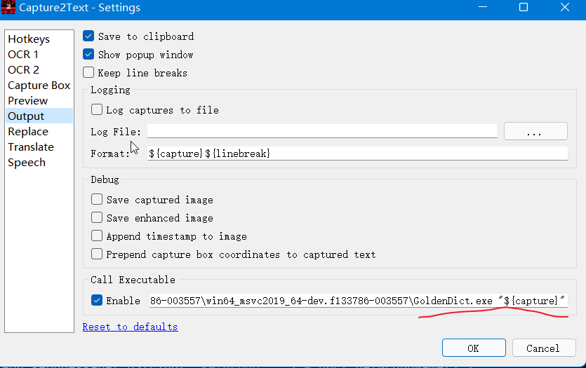
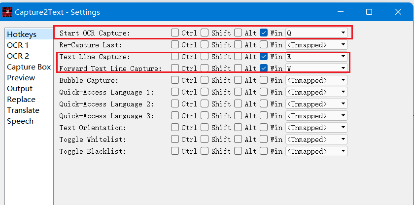
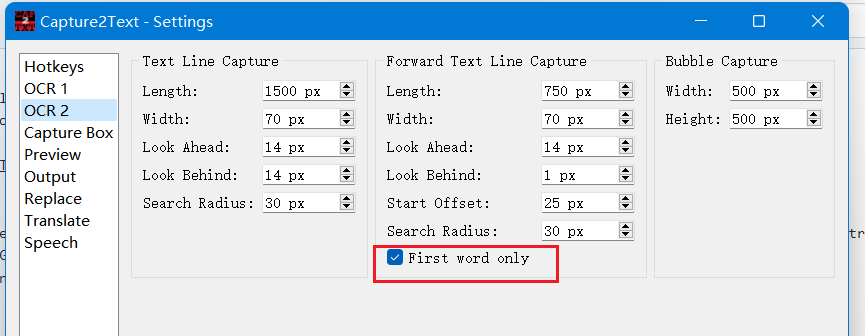
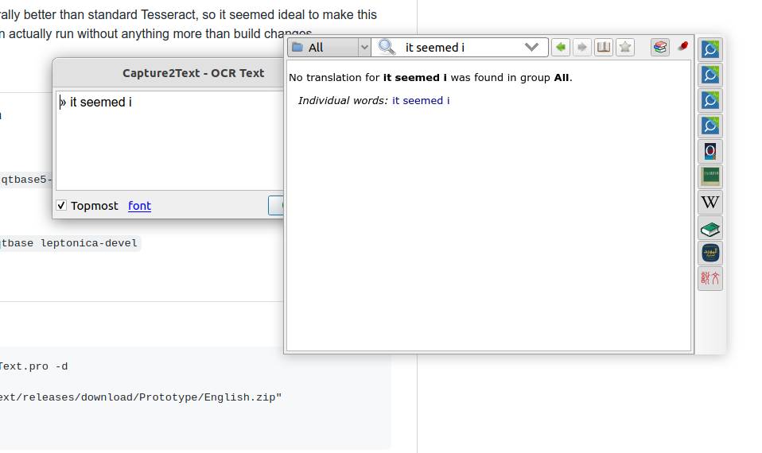
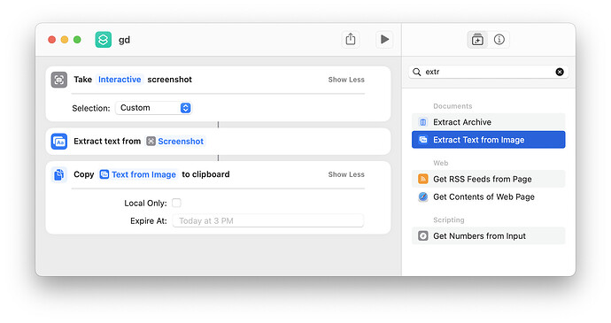
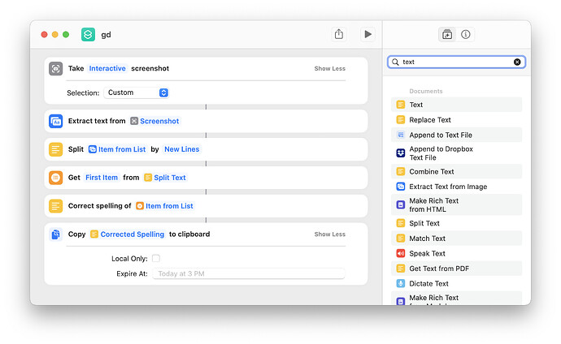

OCR Integration
Current Situation
GoldenDict previously featured word-under-cursor translation on Windows, but that legacy technique is outdated and not cross-platform compatible.
However, any OCR program supporting "post-capture actions" can integrate seamlessly with GoldenDict.
A few examples are provided below, though many similar tools are available.
Clipboard Monitoring Mode
This is a universal method that works with any OCR program that supports copying recognition results to the clipboard.
Setup Steps
-
Enable Clipboard Monitoring in GoldenDict-ng:
- Via Toolbar: Click the 📋 button on the toolbar to toggle clipboard monitoring on/off
- Via Settings: Open
Edit→Preferences, go to the Scan Popup section, enable Track Clipboard change, and optionally enable Start with clipboard monitoring turned on to auto-enable at startup
-
Configure Your OCR Program:
- Use any OCR software (e.g., Capture2Text, OCRSpace, ScreenTranslate, etc.)
- Configure the OCR program to copy the recognized text to the system clipboard after recognition
-
Usage:
- Keep GoldenDict-ng running in the background with clipboard monitoring enabled
- Use your OCR program to capture and recognize text
- After the OCR program copies the text to clipboard, GoldenDict-ng will automatically detect the change and show the translation popup
Benefits
- Works with any OCR tool that supports clipboard output
- Cross-platform compatible (Windows, macOS, Linux)
- No need to configure command-line arguments or executable paths
- Simple and flexible integration
Capture2Text
Capture2Text can call executable after capturing, and you can set the executable to GoldenDict.
Detailed usage document: Capture2Text
For example, change the Output action Call Executable to path_to_the_GD_executable\GoldenDict.exe "${capture}"
Then press Win+Q and select a region. After capturing a word, Capture2Text will forward the word to GoldenDict. If GoldenDict's Popup is enabled, it will show up.

The hotkeys can be configured:

Capture2Text can also obtain word near the cursor without selecting a region via the "Forward Text Line Capture" by pressing
you may want to enable "First word only" so that only a single word would be captured

Use Capture2Text on Linux
Capture2Text does not have a Linux version, but I have ported it to Linux https://github.com/xiaoyifang/Capture2Text thanks to Capture2Text Linux Port and sikmir.

Shortcuts.app & Apple's OCR
This is a macOS-specific implementation of the Clipboard Monitoring Mode. Enable clipboard monitoring in GoldenDict-ng (see above), then create a "Shortcut" that will interactively take a screenshot and change the clipboard.

You may also add additional capabilities like only getting the first word

Tesseract via command line
On Linux, you can combine command line screenshot then pass the output image to Tesseract then pass the text result to goldendict
Example with spectacle (KDE) and grim (wayland/wlroots)
#!/usr/bin/env bash
set -e
case $DESKTOP_SESSION in
sway)
grim -g "$(slurp)" /tmp/tmp.just_random_name.png
;;
plasmawayland | plasma)
spectacle --region --nonotify --background \
--output /tmp/tmp.just_random_name.png
;;
*)
echo "Failed to know desktop type"
exit 1
;;
esac
# note that tesseract will apppend .txt to output file
tesseract /tmp/tmp.just_random_name.png /tmp/tmp.just_random_name --oem 1 -l eng
goldendict "$(cat /tmp/tmp.just_random_name.txt)"
rm /tmp/tmp.just_random_name.png
rm /tmp/tmp.just_random_name.txt
Usage Steps
Step 1: Install Required Software (Dependencies)
Depending on your system, you need to install the following tools:
- OCR Engine: tesseract and its language packs.
- Screenshot Tool: Choose according to your desktop environment:
- KDE (Plasma): Install spectacle.
- Sway (Wayland): Install grim and slurp.
- Other: bash environment.
Example installation for Ubuntu/Debian:
sudo apt update
sudo apt install tesseract-ocr tesseract-ocr-eng tesseract-ocr-chi-sim spectacle
Note:
chi-simis the Chinese language pack. The script example only uses Englisheng, but it's recommended to include Chinese as well.
Step 2: Create the Script File
Create a new file in your home directory, for example ocr_translate.sh:
nano ~/ocr_translate.sh
Copy the code above into it (or type it manually).
Save and exit (In Nano, press Ctrl+O, then Enter, then Ctrl+X).
Step 3: Make It Executable
Run the following command in terminal to make the script executable:
chmod +x ~/ocr_translate.sh
Step 4: Use the Script
- Start GoldenDict first (let it run in the background).
- Execute the script:
./ocr_translate.sh
Operation:
If you're using KDE, your mouse will turn into a crosshair. Drag to select the text region you want to translate. The script will automatically recognize the text, and GoldenDict will display the word's definition in a popup window.
💡 Advanced Optimization Tips
Set Up a Keyboard Shortcut
This is the most recommended way to use it. In your system settings -> Shortcuts, add a global shortcut (such as Ctrl + Alt + G) pointing to the absolute path of this script (e.g., /home/your_username/ocr_translate.sh). This way, whenever you see an unknown word, just press the shortcut to capture it.
Support Chinese Recognition
If you need to recognize Chinese, modify the tesseract line in the script:
Change -l eng to -l eng+chi_sim (requires the Chinese language pack to be installed).
For GNOME Users
If you're using GNOME desktop, the case in the script won't match. You can add a GNOME screenshot command, or use the more generic:
gnome-screenshot -a -f /tmp/tmp.just_random_name.png